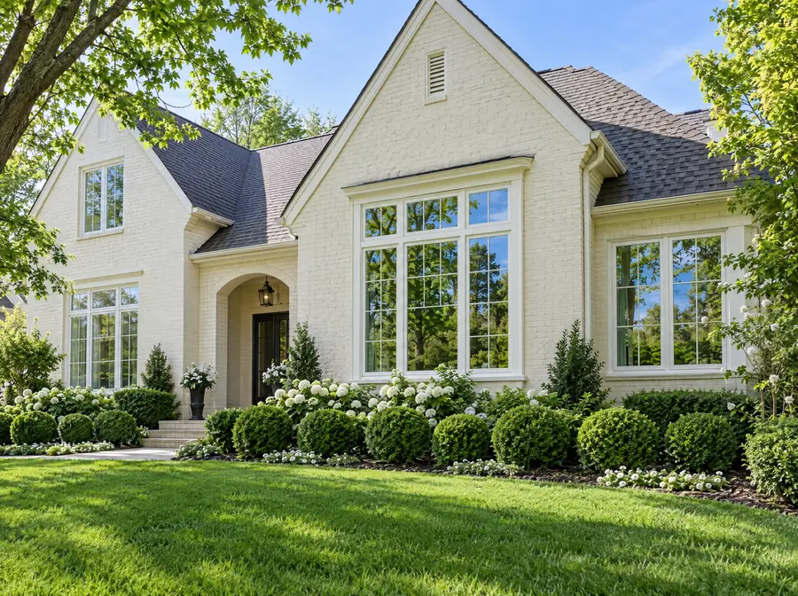
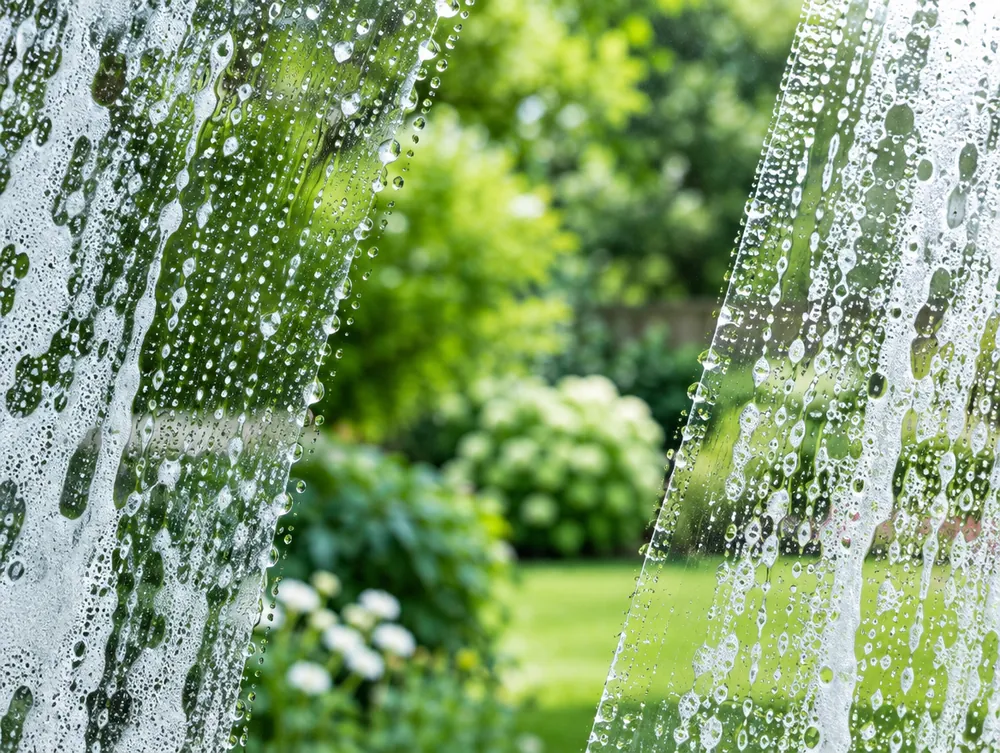

Residential
Every pane, inside and out, so the whole house feels brighter and the view comes back.
Professional window washing, inside and out, for homes and businesses across the Oklahoma City metro.

Services
One call covers the whole job, whether it's your home or your storefront.
Every pane, inside and out, so the whole house feels brighter and the view comes back.
Clean glass is the first thing customers notice. Keep your storefront, lobby or office looking sharp.
Both sides of the glass, so it's clear from wherever you're standing.

The difference
When it's clean, you notice everything else: the light, the view, the room. That's the whole point.
Service area
How it works
Tell us about your windows. A photo or two helps.
We confirm the scope and a time that works for you.
Sparkling glass, inside and out.
FAQ
The greater Oklahoma City metro, including Edmond, Nichols Hills, Yukon, Moore and Norman. If you're nearby and don't see your town, call or text and ask.
Yes. Complete Window Washing works with homes and businesses, including storefronts and offices.
Yes. Interior and exterior window washing are both available, so the glass is clear from both sides.
Call or text (405) 437-4661. A photo or two of your windows helps us give you an accurate quote.
Many homeowners book a cleaning once or twice a year, often in spring and fall. Storefront glass usually looks best on a more frequent schedule.
Call or text for a quote. Homes and businesses across the Oklahoma City metro.